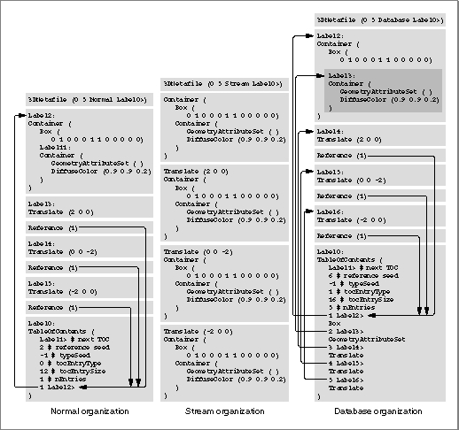

About File Objects
A file object (or, more briefly, a file) is a type of QuickDraw 3D object that you use to read and write data that conforms to the QuickDraw 3D Object Metafile (3DMF), a standard file format intended to facilitate the interchange of three-dimensional data among applications. You can use the 3DMF both as a 3D data storage format and as a 3D data interchange format. For example, when a user saves a 3D model created by your application, you can write the data to a file object. The data-writing methods of the file object and its associated storage object ensure that the data in the piece of storage associated with that storage object (for example, a file on disk or a block of memory) conforms to the 3DMF specification. All other applications capable of handling 3DMF files can thus open and read that data.By using file objects, you can insulate your application from having to know the actual details of the QuickDraw 3D Object Metafile standard. You use file object routines to read and write data in a piece of storage that conforms to the 3DMF and, if necessary, to get information about that storage. In all likelihood, you'll need to know about the details of the 3DMF only if you cannot use file objects to access 3DMF data. For instance, you would need to know the structure of the 3DMF if you wanted to read and write 3DMF files using a 3D graphics system other than QuickDraw 3D.
The relationship between file objects and storage objects is similar to that between view objects and draw context objects. A draw context object receives the raw data needed to draw an image on a particular window system, and the associated view object is an abstraction in which you perform all drawing. Similarly, a storage object receives the raw data read from or written to a particular piece of storage, and the associated file object is an abstraction in which you perform all I/O operations. View objects maintain information about the current state of the drawing, and file objects maintain information about the current state of I/O operations. Just as you must perform all drawing in a rendering loop, between calls to
- Note
- See 3D Metafile Reference for complete information about the structure of the QuickDraw 3D Object Metafile.
Q3View_StartRenderingandQ3View_EndRendering, you must perform all file writing in a writing loop, between calls toQ3View_StartWritingandQ3View_EndWriting. See "Writing Data to a File Object," beginning on page 17-11 for more information on writing 3DMF data.A QuickDraw 3D file object is of type
TQ3FileObject, which is a type of shared object. QuickDraw 3D currently provides no subclasses of theTQ3FileObjecttype.As mentioned earlier, the data associated with a file object must conform to the QuickDraw 3D Object Metafile standard. That standard defines two general forms for the 3D data: text form and binary form. A text file is a stream of ASCII characters with meaningful labels for each type of object contained in the file (for example,
NURBCurvefor a NURB curve). A binary file is a stream of raw binary data, the type of which is indicated by more cryptic object type codes (for example,nrbcfor a NURB curve). The text form is most useful when you're writing and debugging your application, but the binary form is usually smaller (requiring less storage space on disk or in memory) and can be read and written much faster.In addition, there are three ways to organize the data in a text or binary file object. A file object can be organized in normal mode, stream mode, or database mode. In normal mode, a file object contains a table of contents that lists all multiply-referenced objects in the file. This is usually the most compact file object organization, but it requires random access to the file object data in order to resolve references. (It might not, therefore, be the best mode to use when transferring 3D data to a remote machine on a network.)
- IMPORTANT
- Disk-based metafile data, whether a text file or a binary file, should be contained in a file of type '
3DMF'.In stream mode, a file object does not contain a table of contents and any references to objects are simply copies of the objects themselves. This may result in a larger file than normal mode, but it allows the file object to be processed sequentially, without random access. In database mode, a file object contains a table of contents that lists every object in the file, whether or not it is referenced within the file. This organization is useful if you want to determine what information a file object contains without having to read and process the entire file. This would be useful, for example, for creating a catalog of textures.
Figure 17-1 shows a sample text file object organized in each of these three ways. Once again, for complete information about the types of file objects and the ways of organizing them, see the 3D Metafile Reference.
Figure 17-1 Types of file objects

To include in a metafile information about the lights, the renderer, the camera, and other view settings, you can by create and write a view hints object. A view hints object is an object in a metafile that gives hints about how to configure a scene. For instance, you can create a view hints object (by callingQ3ViewHints_New) and then record a view's current settings by calling functions likeQ3ViewHints_SetRendererandQ3ViewHints_SetCamera. Conversely, when you are reading objects from a metafile and you encounter a view hints object in the file, you can use the information in that object to configure a view object, thereby reconstructing the image as accurately as possible. Or, you can choose to ignore the information in a view hints object you find in a metafile.